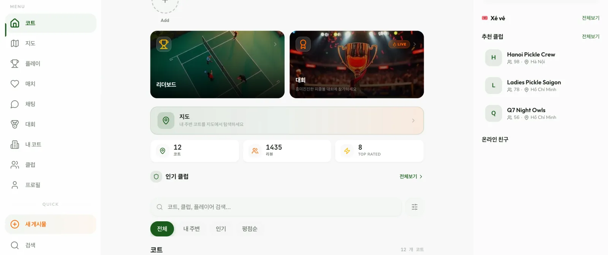
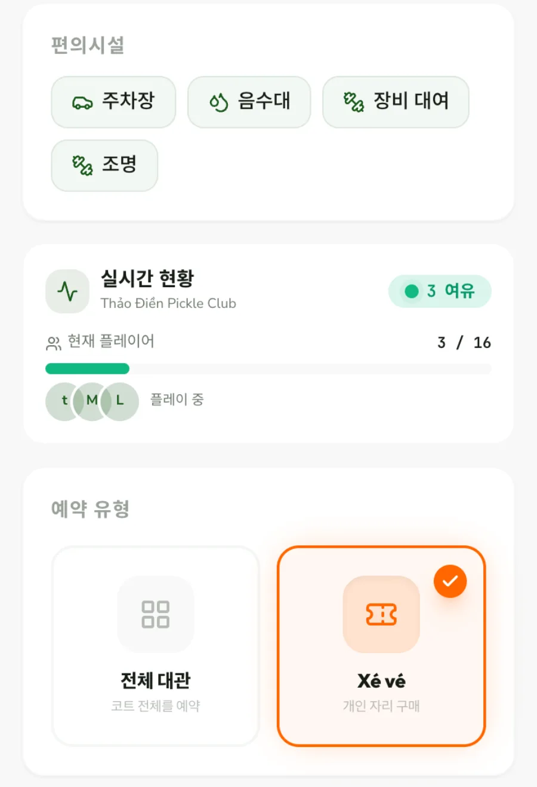
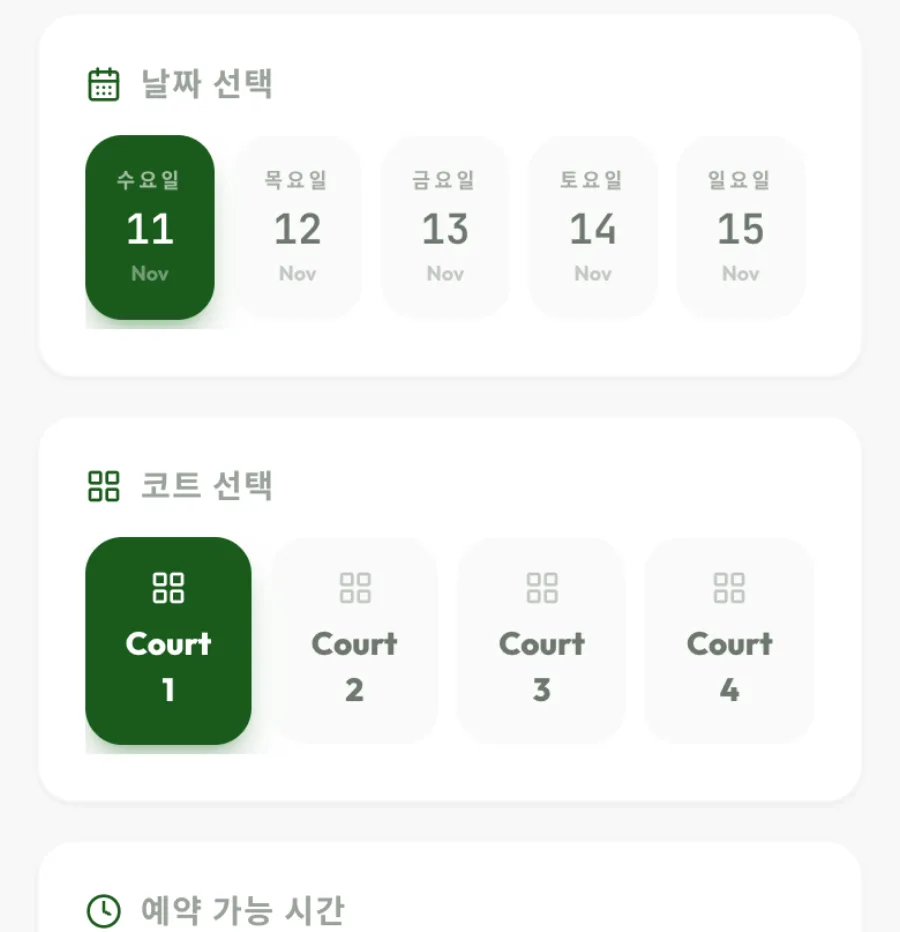
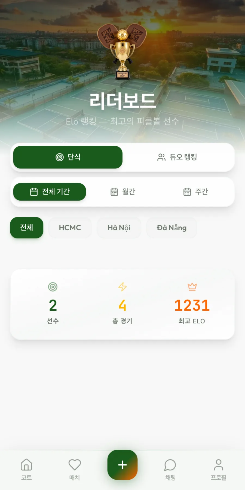

어떻게 만들었나
코트와 사람을 한 화면에
첫 화면 위쪽에는 리더보드와 대회, 지도로 가는 길을 두고, 그 아래에서 코트를 검색하고 내 주변·인기·평점순으로 고릅니다. 넓은 화면에서는 오른쪽에 개인 자리(Xé vé) 세션과 추천 클럽이 함께 보입니다.
휴대폰에서는 같은 내용을 한 줄로 쌓고, 아래 탭에서 코트, 매치, 채팅, 프로필로 바로 넘어갑니다. 코트를 찾는 일과 함께 칠 사람을 찾는 일이 같은 화면에서 시작됩니다.

코트 한 곳을 자세히
코트 상세에는 사진과 평점, 리뷰, 면 수, 실내외 여부, 그리고 주차장·음수대·장비 대여·조명 같은 편의시설이 모여 있습니다. 실시간 현황은 지금 코트에서 몇 명이 치고 있고 자리가 얼마나 남았는지 보여 줍니다.
예약은 같은 페이지 아래에서 바로 이어집니다. 먼저 코트 전체를 빌리는 전체 대관과, 이미 열린 시간에 개인 자리 한 칸만 사는 Xé vé 중 하나를 고릅니다. 혼자 온 플레이어도 코트를 통째로 빌리지 않고 경기에 들어갈 수 있습니다.

날짜, 코트, 시간을 차례로
예약 방식을 고르면 날짜, 코트 번호, 예약 가능 시간을 위에서 아래로 하나씩 고릅니다. 한 번에 한 가지만 정하도록 나눠서 처음 쓰는 사람도 순서를 놓치지 않습니다.
시간대마다 남은 자리 수와 붐비는 시간 표시가 붙어 있어 비어 있는 시간을 쉽게 찾습니다. 앱에서는 VietQR로 결제하고, 코트 운영자가 확인하면 예약이 확정되며, QR 티켓으로 입장합니다.

경기 뒤에는 순위와 클럽
리더보드는 단식과 듀오 랭킹을 나누고, 전체 기간·월간·주간과 지역(HCMC, 하노이, 다낭)별로 ELO 순위를 보여 줍니다. 대회 화면에서는 지역대회, 기업후원, 오픈, 초청 대회를 나눠 찾습니다.
클럽 화면에서는 지역별 클럽을 둘러보고 가입하거나 직접 만들 수 있고, 파트너 찾기에서는 조건에 맞는 플레이어를 찾습니다. 한 번 친 경기가 다음 경기와 모임으로 이어지도록 했습니다.
